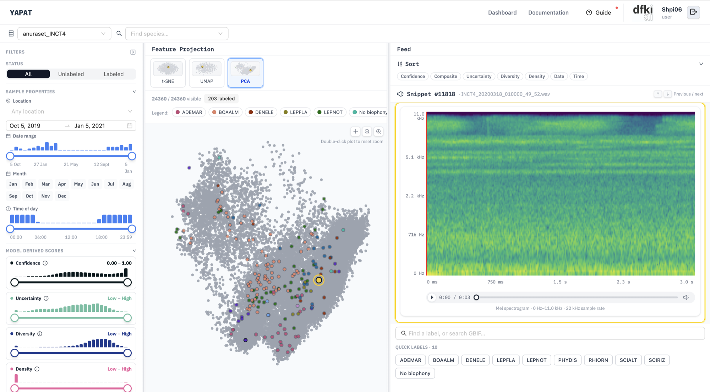

Annotation Hub
The Annotation Hub is where you label audio. YAPAT shows you the snippets its model is least sure about, you choose the labels, and the model learns from every answer you give.
You need: a dataset with embeddings. See Datasets.
Steps
- Open Start Annotating on the Dashboard, or Active Learning on a dataset card.
- Choose the dataset in the toolbar, then click Generate Feed at the top right of the feed.
- On each snippet, look at the spectrogram, play the audio, and choose one or more labels.
- Move on to the next snippet. Your labels are saved automatically.

The three areas
| Area | What it does |
|---|---|
| Filters | Narrow the feed and the projection by label status, location, date, time of day, and model scores. See Filters and Model Scores. |
| Feature Projection | A map of all snippets in the dataset, where similar sounds sit close together. Clicking a point opens that snippet. See The projection. |
| Feed | The snippets to label, one at a time, with sort options above them. |
Generating a feed
A feed is the ordered batch of snippets the Hub shows you to label. It is the step between preparing a dataset and labelling: embeddings must exist first, then you generate a feed, label what it shows, and generate or refresh it again as you go. The button at the top right of the feed starts the process. It reads Generate Feed until a feed exists and Edit Feed afterwards, and both open the same settings dialog. Click Apply to build the feed.
The mode switcher in the toolbar decides how snippets are chosen:
| Mode | What the feed contains |
|---|---|
| Random | A random sample of snippets from the dataset, for broad first coverage. |
| Similarity | Snippets that sound like a reference audio file you upload. Generating is disabled until a file is uploaded. |
| Filter | Snippets selected by metadata filters. |
| Active Learning | Snippets ranked by the model, least certain first. This is the usual choice, and the rest of this section describes it. |
| Validate | Unlabelled snippets ranked by the model's confidence, so you can check its predictions. The dialog adds Focus on species and Minimum confidence. |
Random, Similarity and Filter feeds are set with Location, Annotation status, Species and Feed limit.
Active Learning feeds
The first time you use a dataset there is no model yet, so the dialog asks for a Model family name and how to start. The Do you have ground-truth metadata? switch chooses:
- Off: bootstrap mode — start with randomly chosen snippets. The first model is trained from your labels. This is the usual choice.
- On: cold start — train a first model from existing ground-truth labels, given as a metadata file and a label config file. Only administrators and team owners can do this.
If a WSSED model is registered for the dataset, a model already exists and the dialog skips this choice. Reference pools need no setting here. See How the model is built.
Once a model exists, the dialog only sets how many snippets the feed shows (Top-K, 1 to 500). With Return only Top-K suggestions switched off, the feed returns all predictions for the dataset instead.
What happens next: the feed appears, with the first snippet open. Label it as described below. After every 10 labels the model retrains in the background and the feed refreshes with a new ranking. Use Edit Feed to change its settings at any time.
Labelling a snippet
Choose labels from the quick-label list (managed on the Datasets page), or search the Global Biodiversity Information Facility (GBIF) for a species that is not in the list; a species you pick from the search is added to your own quick labels. A snippet can have several labels.
The model's own guess is never shown on the snippet. This keeps your answer independent, so every stored label is one a person chose. See Active Learning.
- Press ↑ and ↓, or the arrows next to the snippet name, to move to the previous or next snippet.
- Remove one label with its ×, or all of a snippet's labels with Clear all.
- A labelled snippet shows a Labeled badge next to its file name.
- Use No biophony when you hear no animal sound at all. YAPAT treats it as "none of the target species", so the model learns from it without turning it into a species.
- Edit Feed reopens the feed settings, for example to show more snippets.
The model retrains on its own
After every 10 labels, YAPAT retrains the model in the background and refreshes the feed with the new ranking. There is nothing to click.
The projection
The projection shows every snippet of the dataset as a point; snippets that sound alike sit close together. Coloured points are labelled snippets, and the legend shows which colour belongs to which label. The buttons above it switch between three standard methods for drawing the snippets on a flat map: t-distributed stochastic neighbor embedding (t-SNE), Uniform Manifold Approximation and Projection (UMAP), and principal component analysis (PCA). Zoom with the + and − buttons, and double-click to reset the zoom. The ring marks the snippet open in the feed, and clicking any point opens that snippet. The counter above the legend shows how many snippets the current filters leave visible and how many of them are labelled.
Study logs
YAPAT can record interactions such as label choices, playback, and filter changes. Administrators review them under Study Logs on the Dashboard: first a list of participants, then each participant's sessions, then the timeline of events in a session, which can be downloaded as comma-separated values (CSV). Logging is off by default; an administrator switches it on.
- The Hub lives at
/annotate?dataset_id=<id>. - Interaction logging is switched on with
VITE_STUDY_LOGGING_ENABLED. See Environment Setup. - The retrain threshold is
RETRAIN_AFTERin the backend'sactive_learning/config.yaml. - Endpoints: Active Learning API.